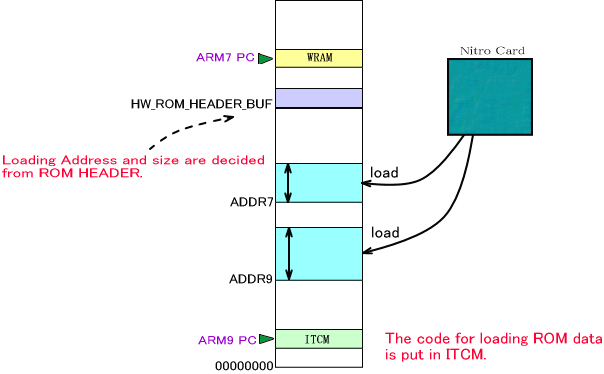

A Reset System is included in the NitroSDK. This system loads the ROM data from the Game Card into main memory and moves the Program Counter register to the appropriate address so the program always starts at the beginning.
The OS_InitReset() function must be called before you can use this Reset System. However, this function is called internally by OS_Init(), there is no need to call OS_InitReset() if you've already called OS_Init().
Reset can be performed only from the ARM9. Only the ARM9 can issue a reset command, which will in turn call OS_ResetSystem(). The ARM7 continues to operate normally until the reset instruction comes from the ARM9. When this reset instruction is sent via PXI (communicated as a PXI interrupt), the ARM7 performs the reset process.
Internal Operations of the Reset Process
This section explains the operations of the two processors after the OS_ResetSystem() function is called.
The ARM9 waits for the card bus to unlock and immediately locks it. Next, all DMA tasks are ended. Then PXI-communication interrupts (and only these interrupts) are enabled in order to receive communications from the ARM7. Other interrupts are disabled. Finally, a reset notification is posted to the ARM7.
On the ARM7 side, when the reset notification comes from the ARM9, all DMA tasks are ended and PXI-communication interrupts (and only these interrupts) are enabled in order to receive communications from the ARM9. Also, the stop command is communicated to the Sound library.
In the explanations of these subsequent steps, all operations take place in ITCM on the ARM9, and in WRAM on the ARM7.
All interrupts are disabled in both the ARM7 and the ARM9. The ARM9 then reads ROM data from the Game Card in accordance with the ROM header information stored in the shared area of main memory.

Once synchronized after the data have been read, the ARM7 and the ARM9 both act to clear memory and registers.
The starting address is set in the Program Counter (PC) according to the ROM header information.
The Reset Parameters
The Reset System has a u32 value, called the Reset Parameter, which can be used to determine if the current program is running because the power has been turned on or because the program was restarted.
This Reset Parameter is obtained by OS_GetResetParameter(). The value of the Reset Parameter is 0 after the power is turned on, but once the OS_ResetSystem() function is called, it takes the value of the function's argument. If resets are performed multiple times, the Reset Parameter holds the value of the argument from OS_ResetSystem() most recently called.
The Reset Parameter is stored in a part of the shared region of main memory. Since this part is not cleared during the reset process, the value of the Reset Parameter can be passed to programs after the reset.
03/08/2005 Unified the Japanese term for "interrupt."
12/13/2004 Corrected terms and word endings.
11/02/2004 Initial version.
CONFIDENTIAL